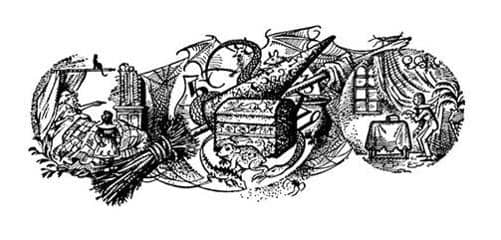
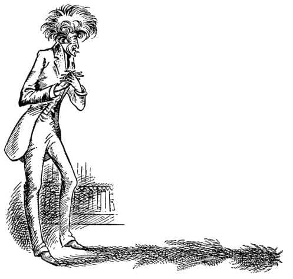

Digory ve Dayısı
Bu, o kadar ani olmuştu ve şimdiye kadar başına gelen en kötü şeyden, hatta bir gece yarısı kâbusundan bile, o kadar kötüydü ki Digory bir çığlık atmıştı. Andrew Dayı eliyle hemen Digory’nin ağzını kapattı. “İşte bu olmadı” diye fısıldadı kulağına. “Ses çıkarmaya başlarsan annen duyar. Ve korkunun anneni ne hale getireceğini bilirsin.”
Digory’nin sonradan da söylediği gibi, bir çocuğu bu şekilde uyarmanın iğrenç adiliği, onu neredeyse hasta etmişti. Fakat kuşkusuz, Digory yeniden bağırmamıştı.
“Böylesi daha iyi” dedi Andrew Dayı. “Belki tutamadın kendini. İnsan ilk kez birinin kaybolduğunu gördüğü zaman çok şaşırır. Geçen gece kobay kaybolduğunda ben bile sersemledim.”
“O bağırdığın gece mi?” diye sordu Digory.
“Ah, beni işittin öyle mi? Umarım beni gözetlemiyordun.”
“Hayır, gözetlemiyordum” dedi Digory öfkeyle. “Fakat Polly’ye ne oldu?”
“Beni kutlamalısın sevgili oğlum” dedi Andrew Dayı ellerini ovuşturarak. “Deneyim başarılı oldu. Küçük kız bu dünyadan gitti – kayboldu.”
“Ne yaptın ona?”
“Onu – aaa – başka bir yere gönderdim.”
“Ne demek istiyorsun?” diye sordu Digory.
Andrew Dayı oturdu ve “Şey, sana hepsini anlatacağım” dedi. “Hiç ihtiyar Bayan Lefay’dan bahsedildiğini duydun mu?”
“Büyükteyzemiz miydi, neydi…” dedi Digory.
“Tam da öyle değil” dedi Andrew Dayı. “O benim vaftiz annemdi. Orada, duvardaki resim onun resmi.”
Digory baktığında başlık takmış yaşlı bir kadının yüzünü gösteren soluk bir fotoğraf gördü. Aynı yüzün fotoğrafını, taşrada kendi evlerindeyken bir kere daha gördüğünü hatırlıyordu şimdi. Kim olduğunu sorduğu annesi bu konuda fazla konuşmak istemiyor gibi görünmüştü. Digory, hiç de güzel bir yüz değil, diye düşünmüştü, fakat kuşkusuz o eski fotoğrafa bakarak gerçeği söylemek çok zordu.
“O bir hata mı yapmıştı, Andrew Dayı?” dedi.
“Şey” dedi Andrew Dayı kıkırdayarak, “neye hata dediğine bağlı bu. İnsanlar o kadar dar kafalı ki. Yaşamının son zamanlarında kesinlikle tuhaf davranıyordu. Akılsızca şeyler yaptı. Onu kapatmalarının nedeni de buydu.”
“Tımarhaneye mi demek istiyorsun?”
“Ah, hayır, hayır, hayır” dedi Andrew Dayı şaşırmış bir sesle. “O türden bir şey değil. Sadece hapishane.”
“Nasıl!” dedi Digory. “Ne yaptı ki?”
“Ah, zavallı kadın” dedi Andrew Dayı. “Çok akılsızlık etti. Pek çok farklı sebebi vardı. Hepsini anlatmaya gerek yok. Bana karşı daima çok nazikti.”
“Fakat söyler misin, bütün bunların Polly ile ne ilgisi var ki? İsterdim ki sen—”
“Her şeyin zamanı var oğlum” dedi Andrew Dayı. “Ölmeden önce ihtiyar Lefay’ı hapisten salıverdiler. Hastalığının son demlerinde ben, kendisini ziyaret etmelerine izin verdiği birkaç kişiden biriydim. Anlayacağın sıradan, cahil insanları sevmiyordu. Ben şahsen severim. Fakat o ve ben aynı türden şeylerle ilgileniyorduk. Ölümünden sadece birkaç gün önce, bana evindeki eski çalışma odasına gitmemi, gizli bir çekmeceyi açmamı ve orada bulacağım küçük bir kutuyu ona getirmemi söylemişti. O kutuya dokunduğum an ellerimin karıncalanmasından, büyük bir sırrı avuçlarımda tuttuğumu anlamıştım. O kutuyu bana verdi ve öldükten hemen sonra kutuyu açmadan, törenle yakacağıma yemin ettirdi. Ben bu yemini tutmadım.”
“Bu yaptığın ahlaksızlık ama” dedi Digory.
“Ahlaksızlık mı?” dedi Andrew Dayı şaşırmış bir ifadeyle. “Haa, anlıyorum. Küçük çocukların yeminlerini tutmaları gerekir demek istiyorsun. Çok doğru, bu, eminim doğru ve düzgün bir kural ve sana öyle yapman öğretildiği için çok memnunum. Fakat şuna kuşku yok ki, küçük çocuklar – ve hizmetçiler – ve kadınlar – ve hatta genelde insanlar için mükemmel olan bu türden kuralların, dâhi öğrencilere, büyük düşünürlere ve bilgelere uygulanmasının beklenemeyeceğini anlamalısın. Hayır, Digory. Benim gibi gizli bilgeliği olan insanlar sıradan zevklerden uzaklaştırıldığı gibi sıradan kurallardan da bağımsız olmalı. Bizimkisi, oğlum, ulu ve yalnızlıkla dolu bir kader.”
Bunu söylerken içini çekmişti ve öylesine ciddi, yüce gönüllü ve gizemli görünmüştü ki, bir an için Digory onun gerçekten oldukça iyi şeyler söylediğini düşünmüştü. Fakat sonra, Polly ortadan kaybolmadan az önce, dayısının yüzünde gördüğü çirkin ifadeyi hatırladı ve aniden Andrew Dayı’nın büyük söylevinin asıl amacını fark etti. “Tüm bunlar şu anlama geliyor” dedi kendi kendine, “istediğini elde edebilmek için her şeyi yapabileceğini düşünüyor.”

“Kuşkusuz” diye devam etti Andrew Dayı, “uzun süre kutuyu açmaya cesaret edemedim; müthiş tehlikeli bir şey gizleyebileceğini biliyordum. Çünkü vaftiz annem çok olağanüstü biriydi. Bu ülkede, bedeninde peri kanı taşıyan son ölümlülerden biriydi (Onun zamanında iki kişinin daha olduğunu söylemişti. Birisi düşes, diğeri de hizmetçiymiş). Aslında Digory, sen şu anda (büyük bir olasılıkla) vaftiz annesi gerçekten peri olan son insanla konuşuyorsun. İşte! İhtiyar bir adam olduğunda hatırlayacağın bir şey.”
“Bahse girerim ki kötü bir periydi” diye düşündü Digory, ve sonra yüksek sesle ekledi, “ama Polly’ye ne oldu?”
“Ne de çok ısrarlısın bu konuda!” dedi Andrew Dayı. “Sanki önemli olan buymuş gibi! İlk işim kuşkusuz ki kutuyu incelemekti. Çok antika bir kutuydu. O zaman bile onun ne Yunan, ne Eski Mısır, ne Babil, ne Çin, ne de Hitit işi olduğu hakkında yeterli bilgim vardı. O, tüm o toplumlardan daha da eskiydi. Ah – sonunda gerçeği bulduğum gün ne büyük bir gündü. Kutu Atlantis’te yapılmıştı; kayıp ada Atlantis’ten gelmişti. Bu, onun, Avrupa’da kazılarda çıkan taş devri aletlerinden yüzyıllarca daha eski olduğu anlamına geliyordu. Ve onlar gibi kaba ve incelikten yoksun da değildi. Çünkü bir zamanlar Atlantis, sarayları, tapınakları ve eğitimli insanlarıyla harika bir şehirdi.”
Sanki Digory’nin bir şey söylemesini bekler gibi bir süre durakladı. Fakat Digory geçen her dakika dayısından daha az hoşlanıyordu ve bundan dolayı bir şey söylemedi.
“Bu arada” diye devam etti Andrew Dayı, “büyücülük hakkında bilmem gereken ne varsa (bunları bir çocuğa açıklamak pek uygun olmaz) hepsini öğreniyordum. Bu demekti ki, kutunun içinde ne türden şeyler olduğu hakkında epey fikir edinmiştim. Değişik deneylerle olasılıkları en aza indirmiştim. Bazı – şey, acayip, şeytani insanlarla tanışmak ve hiç de hoş olmayan deneylerden geçmek zorunda kaldım. Saçlarım bundan dolayı beyazladı; insan durduk yerde büyücü olmuyor. Sonunda sağlığım bozuldu. Ancak iyileştim. Ve artık gerçeği biliyordum.”
Kimsenin gerçekten duyma olasılığı olmamasına karşın eğilerek, “Atlantis kutusu, dünyamız henüz oluşurken, başka bir dünyadan getirilmiş bir şey içeriyordu” derken fısıldamıştı.
“Ne?” diye sordu Digory, direnmesine karşın ilgilenmeye başlamıştı.

“Sadece toz” dedi Andrew Dayı. “İnce, kuru toz. Bakmaya bile değmez. Bir ömürlük zahmete değmez, diyebilirsin. Fakat ben bu toza baktığımda (dokunmamaya çok özen gösterdim) ve her tanesinin bir zamanlar başka bir dünyada olduğunu düşündüğümde – başka bir gezegen demek istemiyorum, biliyorsun onlar dünyamızın parçaları ve yeteri kadar uzağa gidersen onlara ulaşabilirsin – fakat gerçekten bir diğer dünya – bir diğer doğa – bir diğer evren – bu evrenin boşluğunda sonsuz olarak seyahat etsen bile ulaşamayacağın bir yer – sadece büyü ile ulaşabileceğin bir yer – eh!” Burada Andrew Dayı ellerini, eklemleri çatapatlar gibi çatırdayana kadar ovuşturdu.
“Biliyordum ki” diye devam etti Andrew Dayı, “doğru bir formül oluşturabilirsen, bu toz seni geldiği yere götürecekti. Fakat zorluk onu doğru bir bileşime ulaştırmaktı. İlk deneylerim hep başarısızdı. Kobaylarda denedim. Bazıları sadece öldü. Bazıları da küçük bombalar gibi patladı—”
Bir zamanlar bir kobayı olan Digory “Bu yaptığın çok zalimce bir şey” dedi.
“Nasıl da konuyu habire saptırıyorsun!” dedi Andrew Dayı. “O yaratıklar bunun için yetiştirilmişlerdi. Onları kendim satın aldım. Dur bakalım – neredeydim? Ha, tamam. Sonunda yüzükleri yapmayı başardım, sarı yüzükleri. Fakat o zaman da yeni bir zorluk ortaya çıkmıştı. Bir sarı yüzüğün, ona dokunan yaratığı Öbür Taraf’a göndereceğinden tamamıyla emindim artık. Fakat orada ne bulduğunu anlatmak üzere geri getiremezsem bana ne faydası olacaktı ki?”
“Ya onun durumu ne olacak?” dedi Digory. “Geri gelemezse o da kötü bir durumda olacak!”
“Sen her şeye yanlış bir açıdan bakmaya devam edeceksin” dedi Andrew Dayı sabırsız bir ifadeyle. “Bunun büyük bir deney olduğunu anlayamıyor musun? Birini Öbür Taraf’a göndermemin tüm amacı, oranın nasıl bir yer olduğunu öğrenmek istememdir.”
“Öyleyse kendin niye gitmedin?”
Digory hiç kimsenin, böylesine basit bir sorudan, dayısı kadar şaşırıp alındığını görmemişti. “Ben ha? Ben ha?” diye bağırdı. “Bu çocuk deli olmalı! Yaşamının bu döneminde ve sağlığı bu durumda olan bir adamın aniden başka bir evrene savrulmanın şokuna ve tehlikelerine katlanma riskine girmesi? Hayatımda asla bu kadar mantığa aykırı bir şey duymadım! Ne dediğini biliyor musun sen? Bir Başka Dünya’nın ne demek olduğunu düşün – her şeyle karşılaşabilirsin – her şeyle.”
“Ve sen Polly’yi oraya gönderdin öyle mi?” dedi Digory. Yanakları öfkeden kıpkırmızı olmuştu şimdi. “Ve dayım olmana karşın yine de söyleyeceğim” diye ekledi, “sen, gitmeye çekindiğin bir yere bir kızı göndermekle korkaklar gibi davrandın.”
“Susunuz küçük bey!” dedi Andrew Dayı elini masaya vurarak. “Küçük, pis bir okul çocuğu benimle böyle konuşamaz. Hiç anlamıyorsun. Ben deneyi yapan büyük usta, bilgin ve büyücüyüm. Elbette, üzerinde deney yapabileceğim şeylere ihtiyacım var. Allah bilir, kullanmadan önce kobaylardan da izin almam gerektiğini söyleyeceksin az sonra. Fedakârlık yapmadan hiçbir bilgeliğe ulaşılamaz. Ancak kendimin gitmesi fikri gülünç. Bu, generale sıradan bir asker gibi savaşmasını söylemeye benzer. Varsay ki, ben öldürüldüm, bütün hayatımı verdiğim çalışmalar ne olacak?
“Of, çene yapmayı bırak” dedi Digory. “Polly’yi geri getirecek misin?”
“Saygısızca sözümü kestiğinde sana söylemek üzereydim ki” dedi Andrew Dayı, “sonunda dönüş yolculuğunu yapmanın bir yolunu buldum. Yeşil yüzükler seni geri getiriyor.”
“Fakat Polly’nin yeşil yüzüğü yok ki.”
“Hayır” dedi Andrew Dayı zalimce bir gülümsemeyle.
“Öyleyse geri gelemez” diye bağırdı Digory. “Ve bu onu öldürmekle aynı anlama gelir.”
“Geri gelebilir” dedi Andrew Dayı, “eğer başka biri sarı bir yüzük takar ve bir tanesi kendisini, diğeri de Polly’yi geri getirmek için iki yeşil yüzük taşıyarak onu aramaya giderse.”
Şimdi Digory, yakalandığı tuzağı görmüştü kuşkusuz: Ağzı açık, hiçbir şey söylemeden Andrew Dayı’nın yüzüne baktı. Yanakları iyice solmuştu.
“Umarım” dedi Andrew Dayı, şimdi yüksek ve güçlü bir sesle, sanki yeğenine iyi bir nasihat ve de hatırı sayılır bir bahşiş veren mükemmel bir dayı gibi, “umarım, Digory, sen korkağın biri değilsindir. Ailemizden birinin, tehlikedeki bir – ah – bayanın yardımına gidecek kadar onur ve cesaret sahibi olmaması beni üzer.”
“Of, kapa çeneni!” dedi Digory. “Sen birazcık onurlu olsaydın, kendin giderdin. Fakat biliyorum ki gitmeyeceksin. Tamam. Anladığım kadarıyla benim gitmem gerekiyor. Fakat sen bir canavarsın. Sanırım tüm bunları planlamıştın, Polly bir şey bilmeden gidecekti ve onun arkasından da ben gidecektim.”
“Elbette” dedi Andrew Dayı o nefret uyandıran gülümsemesiyle.
“İyi o zaman. Gideceğim. Fakat önce sana söylemek istediğim bir şey var. Bugüne kadar büyüye inanmazdım. Şimdi gerçek olduğunu görüyorum. Eğer bu doğruysa, sanırım tüm eski peri masalları az ya da çok doğrudur. Ve sen basitçe, masallardaki gibi kötü, zalim bir büyücüsün. Eh, ben bu türden insanların, sonunda yaptıklarının bedelini ödemedikleri bir hikâye okumadım ve bahse girerim ki sen de ödeyeceksin. O zaman hak yerini bulmuş olacak.”
Digory’nin söylediği şeylerden Andrew Dayı’ya en fazla dokunanı bu oldu. Andrew Dayı irkildi ve yüzüne öylesine bir korku ifadesi geldi ki, kendisi adeta bir canavar olmasına karşın, neredeyse ona acıyacaktınız. Fakat bir saniye sonra kendini topladı ve zoraki bir gülümsemeyle “Eh olabilir, sanırım senin gibi, kadınların arasında yetiştirilmiş bir çocuğun böyle düşünmesi doğaldır. Kocakarı hikâyesi ha? Benden gelecek tehlikeden kaygılanmana gerek yok Digory. Küçük arkadaşının içinde bulunduğu tehlikelerden endişelensen daha iyi edersin. Gideli epey oldu. Eğer Öbür Taraf’ta tehlike içindeyse, birazcık geç kalırsan çok yazık olur.”
“Sanki senin umrunda” dedi Digory sert bir şekilde. “Çenebazlığın canımı sıkıyor. Ne yapmam gerekiyor?”
“Sen gerçekten duygularını kontrol etmeyi öğrenmek zorundasın oğlum” dedi Andrew Dayı soğuk bir ifadeyle, “aksi takdirde sen de büyüyünce aynı Letty Teyzen gibi olacaksın. Şimdi beni dinle.”
Ayağa kalktı, eldivenlerini giydi ve yüzüklerin bulunduğu tepsiye yaklaştı.
“Sadece” dedi, “teninle temas ettikleri zaman etkili oluyorlar. Eldiven giyerek onlara dokunabilirim – işte böyle – ve hiçbir şey olmaz. Eğer yüzüklerden birini cebinde taşırsan hiçbir şey olmaz, fakat kuşkusuz, yanlışlıkla elini cebine sokup ona dokunmamaya dikkat etmelisin. Sarı yüzüğe dokunduğun an bu dünyadan yok olursun. Ve sen Öbür Taraf’ta iken, sanıyorum – bu henüz denenmedi ama sanıyorum ki – yeşil yüzüğe dokunduğun an o dünyadan yok olacaksın ve – umarım – bu dünyada görüneceksin. Şimdi bu iki yüzüğü alıp senin sağ cebine koyacağım. Yeşil yüzüklerin hangi cebinde olduğunu dikkatle hatırla. Bir tane senin, bir tane küçük kız için. Ve şimdi kendin için bir sarı yüzük al. Ben senin yerinde olsaydım, parmağıma takardım. Böylece düşürme riskim azalırdı.”
Digory sarı yüzüğe dokunmak üzereyken aniden kendini toparladı.
“Bana bak” dedi. “Annem ne olacak? Diyelim ki benim nerede olduğumu sordu.”
“Ne kadar erken gidersen o kadar çabuk dönersin.” dedi Andrew Dayı neşeyle.
“Fakat sen gerçekten geri gelip gelemeyeceğimi bilmiyorsun ki.”
Andrew Dayı omuzlarını silkti, kapıya yürüdü, anahtarı çevirip kapıyı açtı ve dedi ki:
“Peki öyleyse. Nasıl istersen. Aşağıya in ve yemeğini ye. Bırak küçük kızı vahşi hayvanlar yesin, boğulsun, ya da Öbür Dünya’da açlıktan ölsün, ya da sonsuza kadar orada kaybolsun; eğer tercihin buysa. Benim için fark etmez. Belki çay saatinden önce Bayan Plummer’a gidip, bir yüzük takmaktan korktuğun için kızını bir daha asla göremeyeceğini açıklasan iyi edersin.”
“Tanrım” dedi Digory, “suratına bir yumruk yapıştıracak kadar büyük olsaydım keşke!”
Sonra ceketinin düğmelerini ilikledi, derin bir nefes aldı ve yüzüğe uzandı. Ve o zaman, daha sonraları da hep düşündüğü gibi, terbiyesinin başka bir şey yapmasına olanak vermediğini düşündü.